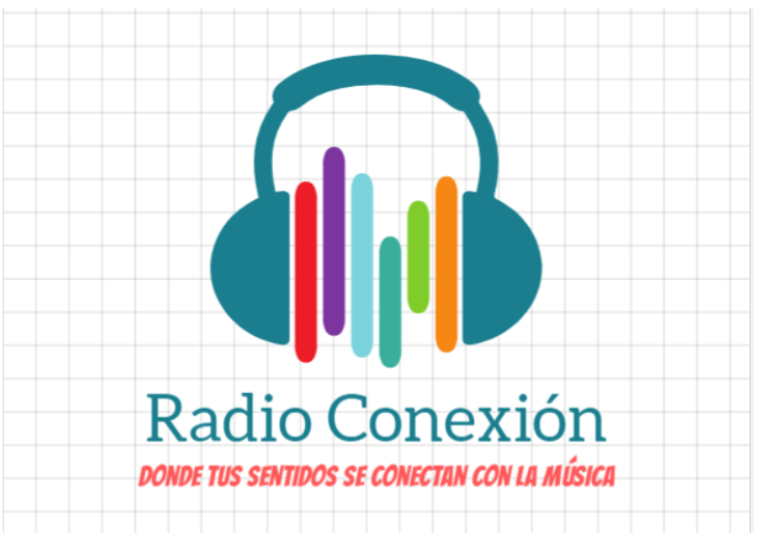
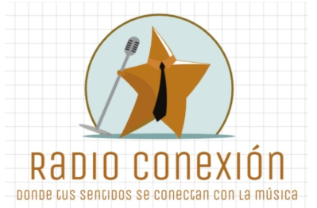
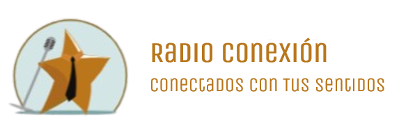
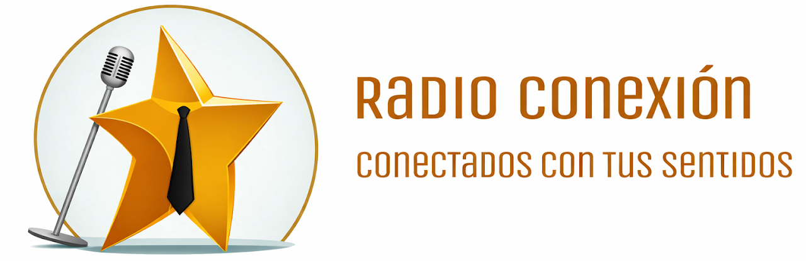
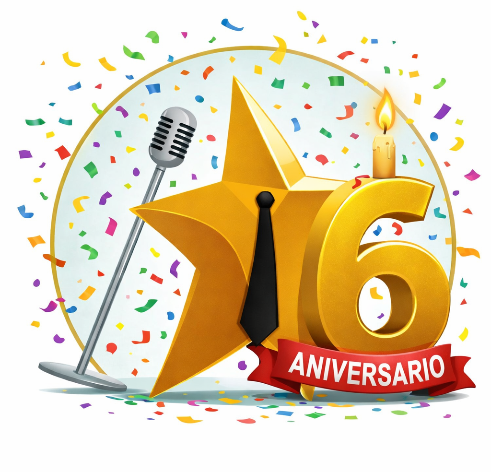

2020
El primer lema fue “Donde tus sentidos se conectan con la música”. Ese año se amplió el audífono, cambió la tipografía y se mejoró la visibilidad del lema.
Radio Conexión nació en marzo de 2020, en plena cuarentena, cuando comenzaron las primeras grabaciones desde casa. Lo que partió como un experimento para compartir música con la familia se convirtió, con el tiempo, en una radio y una comunidad que sigue creciendo.
Desde entonces, la radio ha sumado nuevos formatos, contenidos y una identidad visual propia. La música nos sigue uniendo, pero también las noticias, el clima, las historias y cada momento compartido con nuestra audiencia.
Marzo es un mes muy especial para la radio: fue entonces cuando comencé a grabar los primeros episodios de Radio Conexión.
Todo inició en plena cuarentena, durante la pandemia de 2020. Un día encendí el computador, abrí la grabadora de voz y descubrí que podía poner música. Los primeros episodios los compartí con mi familia, aunque todavía se escuchaba mucho ruido de fondo.
Una persona muy generosa me recomendó Audacity y eso cambió todo. Dejé la grabadora, mejoré la calidad de la música y, después de varios meses, aprendí a crear fondos que hicieron los episodios más entretenidos y alegres.
Después llegó la página web para estar aún más conectados. También evolucionaron el logo y el lema de Radio Conexión. Me enorgullece profundamente que la radio haya perdurado seis años y continúe creciendo.
Gracias querida audiencia por ser parte de no solo una radio, sino una gran comunidad. Gracias por escuchar los episodios de principio a fin.
Un recorrido por los logos y los lemas que han acompañado cada etapa de la radio.

El primer lema fue “Donde tus sentidos se conectan con la música”. Ese año se amplió el audífono, cambió la tipografía y se mejoró la visibilidad del lema.

El logo se renovó por completo: el audífono con ondas de colores dio paso a la estrella con corbata y micrófono. El lema original se mantuvo.

La radio utilizó versiones verticales y horizontales. El lema se simplificó a “Tus sentidos se conectan con la música”.

Se mantuvo la estructura y se quitaron las cuadrículas del fondo. El lema se hizo más directo para reflejar una conexión que va más allá de la música.
La identidad dio el salto al formato 3D: una imagen moderna, luminosa y clara que conserva la tipografía iniciada en 2021. La estrella con corbata representa al locutor en acción.

Este logo se creó para conmemorar el sexto aniversario de Radio Conexión y celebrar una historia construida junto a su audiencia.